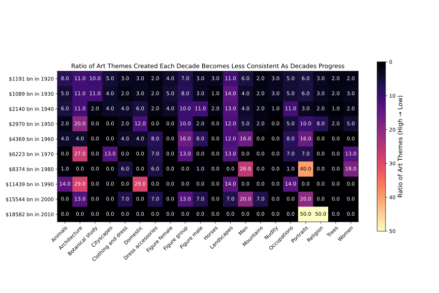

Data Visualisations
Investigating the relationship between GDP and art themes
1. Line graph: Popularity of Art Themes & GDP
Please scroll to view full plot, or click here to view in separate window
Reasoning behind choice of visualisation
Since we chose a big amount of art themes to look at, we wanted to show correlation, but we did not want any conclusion from the graph to be confusing or misinterpreted.
Therefore we chose to make an interactive graph where you can choose to look at all the art themes together, the average effect of GDP on art themes produced or the effect of GDP on any of the art themes.
We also chose to have medium to dark colours for the lines to ensure visibility and clarity for everyone.
Our insights
2. Heatmap: Creation of art themes & GDP

Reasoning behind choice of visualisation
We choose to represent our data using a heatmap as it was the most efficient way to show all the data about all the decades and the top 20 art themes at once.
A heatmap allows us to compare multiple decades and themes.
A heatmap means that any patterns and trends are clearly highlighted.
For our heatmap, we chose to look at each decade. We focused on the proportion of artworks that had the top 20 art themes for each decade.
Our insights
For further exploration
Interactive line graph: Popularity of Art Themes & GDP
Please scroll to view full plot, or click here to view in separate window
Interactive line graphs: Sentiment & GDP
Please scroll to view full plot, or click here to view in separate window